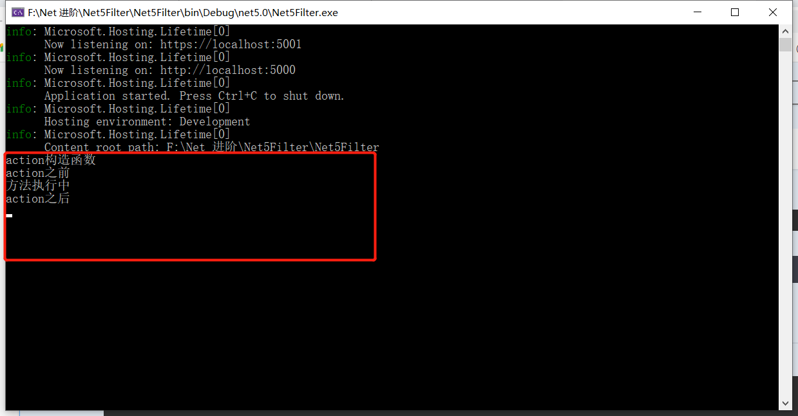
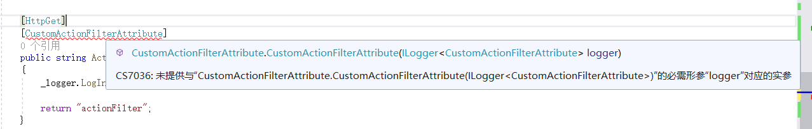

# ActionFilter 同步实现
public class CustomActionFilterAttribute : Attribute, IActionFilter | |
{ | |
public void OnActionExecuted (ActionExecutedContext context) | |
{ | |
Console.WriteLine ("action 之后"); | |
} | |
public void OnActionExecuting (ActionExecutingContext context) | |
{ | |
Console.WriteLine ("action 之前"); | |
} | |
} |
自定义实现的过滤器标注在 action
[Route ("/api/[action]")] | |
public class ActionController : ControllerBase | |
{ | |
public ActionController () | |
{ | |
Console.WriteLine ("action 构造函数"); | |
} | |
[HttpGet] | |
[CustomActionFilterAttribute] | |
public string ActionIndex () | |
{ | |
_logger.LogInformation ("日志记录方法执行"); | |
return "actionFilter"; | |
} | |
} |
# 运行项目

# 结论
控制器构造函数-》OnActionExecuting-》调用的API(action)-OnActionExecuted
# ActionFilter 异步实现
public class CustomAsyncActionFilterAttribute : Attribute, IAsyncActionFilter | |
{ | |
public async Task OnActionExecutionAsync (ActionExecutingContext context, ActionExecutionDelegate next) | |
{ | |
Console.WriteLine ("action 之前"); | |
await next.Invoke (); | |
Console.WriteLine ("action 之后"); | |
} | |
} |
# ActionFiter 业务上能做什么
记录日志
简单记录下实现日志的功能
public class CustomActionFilterAttribute : Attribute, IActionFilter | |
{ | |
private readonly ILogger<CustomActionFilterAttribute> _logger; | |
public CustomActionFilterAttribute (ILogger<CustomActionFilterAttribute> logger) | |
{ | |
_logger = logger; | |
} | |
public void OnActionExecuted (ActionExecutedContext context) | |
{ | |
_logger.LogInformation ("日志进入之后"); | |
Console.WriteLine ("action 之后"); | |
} | |
public void OnActionExecuting (ActionExecutingContext context) | |
{ | |
_logger.LogInformation ("日志进入之前"); | |
Console.WriteLine ("action 之前"); | |
} | |
} |
上面我们加了一个参数是日志接口的构造函数方法，当我们要在 action 上面去标记自定义的过滤器时，发现编译并不通过

上面的提示很清楚，我们没有传入对应的构造函数参数，以实例化对象。
如何不给构造函数参数也能实例化对象？？？
答案:' 依赖注入 -- 让 IOC 容器来创建对象'
下面有三种方法可以实现
# 总结
# 1.TypeFilterAttribute: 支持 Filter 的构造函数注入
[HttpGet] | |
[TypeFilter (typeof (CustomActionFilterAttribute))] | |
public string ActionIndex () | |
{ | |
_logger.LogInformation ("日志记录方法执行"); | |
return "actionFilter"; | |
} |
# 2.ServiceFilterAttribute: 使用这个必须要注册服务，同样支持 Filter 的构造函数注入
[HttpGet] | |
[ServiceFilter (typeof (CustomActionFilterAttribute))] | |
public string ActionIndex () | |
{ | |
_logger.LogInformation ("日志记录方法执行"); | |
return "actionFilter"; | |
} |
在 startup.cs 文件中我们需要注册一下 CustomActionFilterAttribute 这个类
services.AddTransient<CustomActionFilterAttribute>(); |
# 3. 全局注册：支持 Filter 的构造函数注入
在 startup.cs 中
services.AddTransient<CustomActionFilterAttribute>(); | |
services.AddControllers((options)=> | |
{ | |
options.Filters.Add<CustomActionFilterAttribute>(); | |
}); |